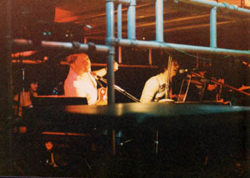
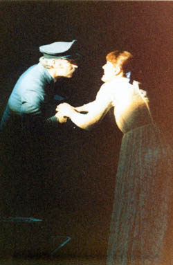

Chapter 10. Tommy at the Garrick
As we commenced to start the rehearsals again for the Royal Exchange, we heard that we had been invited to do Tommy at the Garrick in Altrincham, before the Exchange date. The Garrick was booked for July the 4th, no costs would be borne by us and we would get 50% of the door. This was too good an offer to miss.
 There was a minor problem though as we had previously set the show in the Oldham Grange's round stage where there were several entrances. The Garrick had a proscenium arch stage (i.e. a standard setup) with only two entrances. Also historically the Garrick's stage had a very peculiar sound quality. Previously we had experienced many problems where one could be heard but only from the front forwards. If you were stood at the side, often as little as six foot away, you couldn't hear a thing. This was a problem for the cast and had the potential to cause missed cues etc. To solve this problem we had radio microphones, so we went ahead. The cast and band were exactly the same, except we lost Alan Ratcliff, so Neil had to double up on Drums and Percussion.
Straight after the Grange show we had a get together the following Thursday June 8th at the Two Brewers in Salford and then met twice weekly until the actual performance. We only had a total of 7 rehearsals, but we did know the show backwards by then, so the only differences were those already noted with respect to the shape of the stage.
When the day dawned, it proved to be far more eventful than we had planned and sometimes for all the wrong reasons. For a start, we were really cramped the band therefore were getting in the cast's way. Actually the sound quality was very good all considered, but it was a harrowing rehearsal and speaking personally, a pretty ropey performance, after the Grange ones. I had checked at 7.10 p.m. that all the instruments were on and in tune so then left the stage for the curtains to open. I walk on at 7.29 and start playing the Prologue...fine, but then jump to the clavinet in 'It's a boy!' and... no sound. God, did I panic! I thought that the foot-pedal, which had just been fixed, had gone again, so I turned to the Yamaha and tried to get a similar Clavinet sound instantly, a tricky task given time, but an impossibility given no time at all and whilst trying to play the piece one handed as well! Then I tried to pull out the wire of the foot-pedal to bypass it, and plug into the amp. By now, I was into the Overture and still playing one-handed, when I suddenly discovered why it wasn't working. Someone had come along afterwards, and simply disconnected it. So I plugged it back in... instant sound!
It took me a long time to get over the shock of that. Then the dry-ice machine was blowing all over the gear and I was panicking in case it got inside the works. Then the microphone wire from the Bridge above us was hanging over my gear and stopping me moving around. So in other words lots of stupid little things went wrong.
 The real crunch came in Act 2 when Alison got burned in 'Smash The Mirror' on the flash bomb. To start off I wasn't watching at that moment so I didn't see it happen and since she carried on singing although in desperate pain, I didn't notice anything wrong. The first thing I noticed was Nicky's erratic performance immediately after it happened! He mistimed a jump in 'I'm Free' and ended up off stage and then he mis- sang 'Sensation': I couldn't understand it. Then in 'TV Studio' where Alison is due to enter, (and wasn't going to!) I played the 'Sensation' intro, in other words, the same chords but the wrong speed, instead by mistake.
Well, as I was trying desperately to straighten myself out, Alan (Bernie), was trying to tell me she wasn't coming on, but I was so harassed by my balls up that I gestured to him to get lost and stop annoying me when I'm busy, if you know what I mean!! Of course, I soon found out when he started singing instead of Alison. By now, I was thoroughly fed up with the whole thing and was very glad to get off.
What had in fact happened was that the flash bomb, which had been placed behind the mirror, had in fact been moved forwards in front of it. What was supposed to happen was that Ally goes to 'smash the mirror' but a flash bomb goes off, she quickly pulls the mirror around to its back view, out of sight of the audience who are temporarily blinded by the flash. On the back of the mirror the glass was in fact smashed already, and to the audience it looked as if she had really smashed it up. BUT the flash bomb went off too far forward and burned right up her arm. Being the trooper that she was, she carried on singing, then in breaks she was turning away from the audience, and crying desperately, before composing herself, turning round again to sing her next line. We never did find out who exactly had shoved it forward, but we suspected one of our band who did have the thing going off originally almost right up his nose, and without thinking of the consequences, shoved it forward a bit!
Alison turned up later on with it all heftily bandaged, having been rushed to hospital.
The audience loved the performance, seemed to be oblivious of the carnage and mayhem and encored us! But for us it was a rotten experience. No recording exists of this performance; thank goodness!